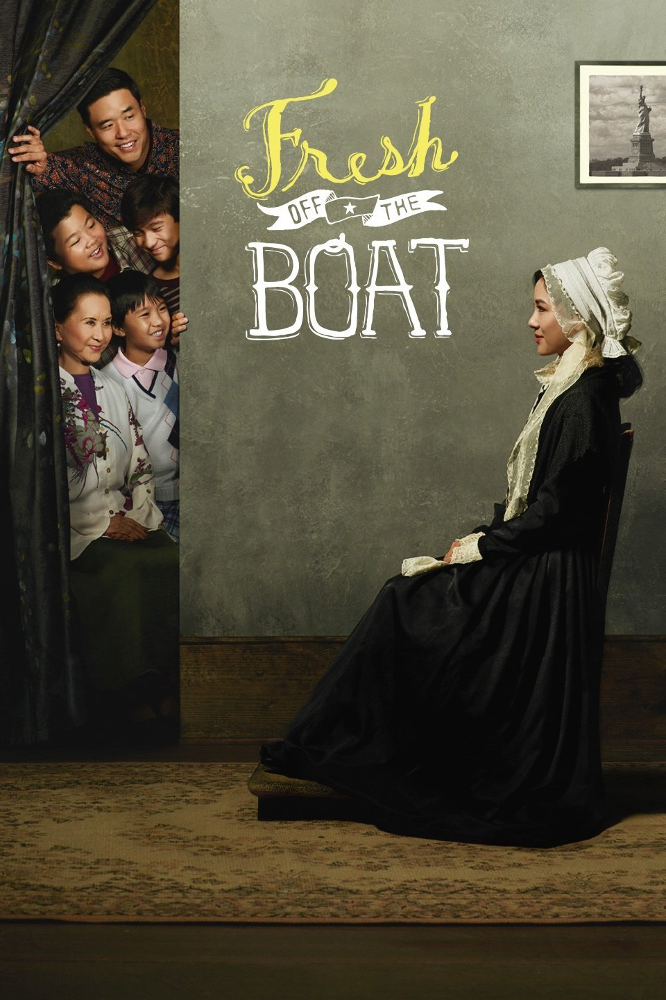
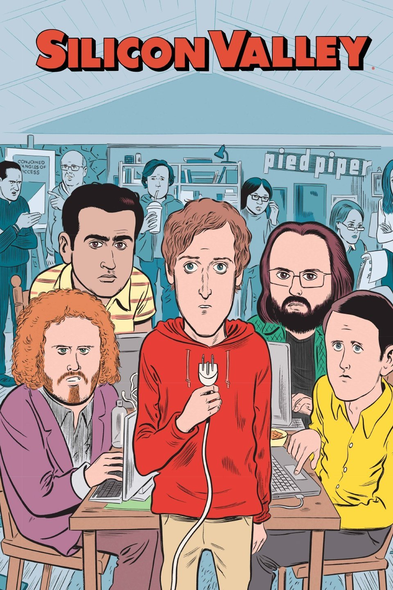
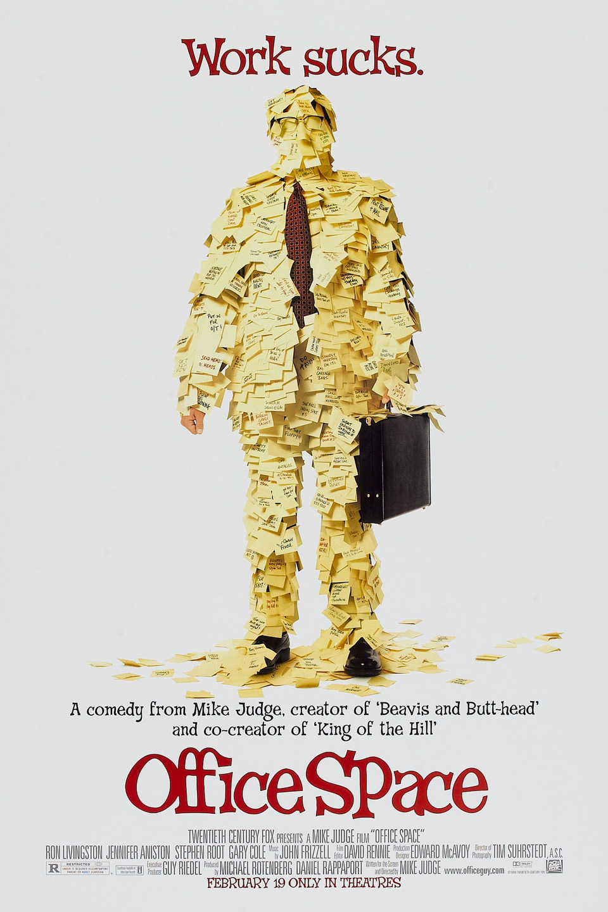

My education background is a BBA (Bachelors Biz Mgmt) in MIS (Mgmt info systems) from The University of Georgia. I first came to China in 2011 to study abroad in Dalian and then stayed to launch a hardware startup through Chinaccelerator batch 2 that made it to TechCrunch Disrupt's Startup Battlefield in Beijing. I'm currently a founder and Product Manager of a US-based fundraising platform (Zurly.com) and also a LED/Solar consumer product manufacturer (GoVolt.com). Right now I'm trying to choose between focusing more on hardware or software. I want to delve deeper into either software development or hardware development and Le Wagon should help me quickly figure out if software dev is something I should pursue. After the program I'm pretty wide open. We'll have to see where I'm at in two months :)
Check Out Zurly|  | Fresh Off The BoatThis movie is about a Taiwanese American family growing up in florida |
|  | Silicon ValleyThis is a comedy based in San Francisco and is extremely funny and accurate regarding startup life. |
|  | Office SpaceThis movie is about a Taiwanese American family growing up in florida |